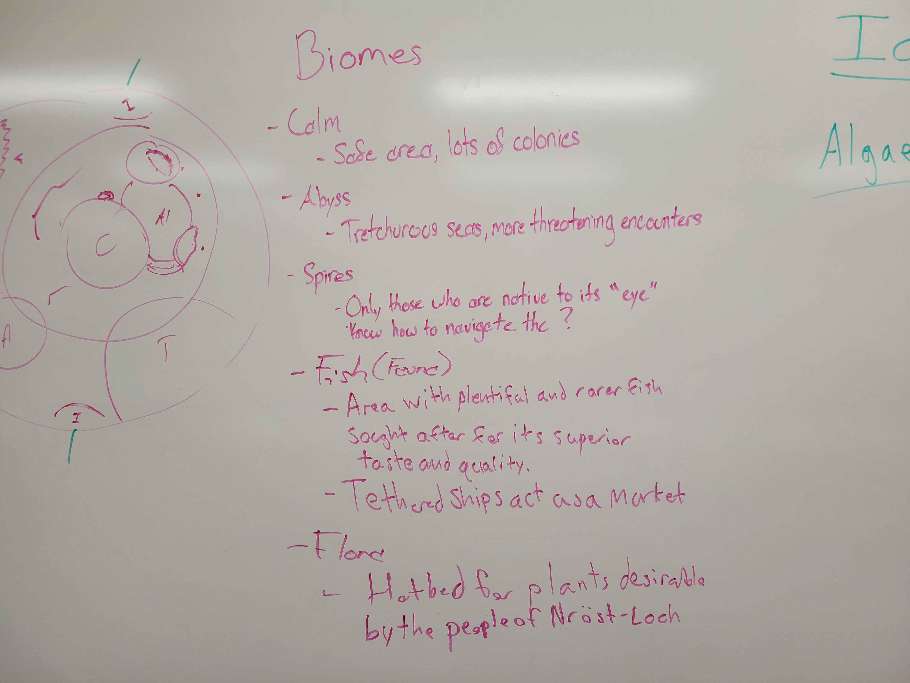
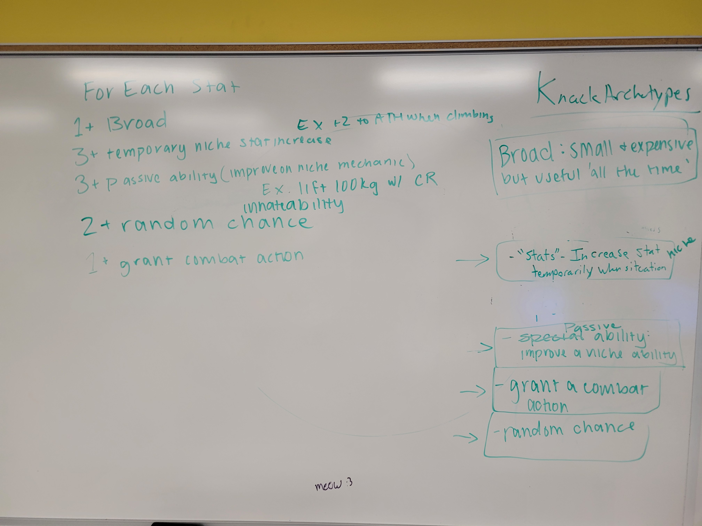

Introduction
The Whale is a Tabletop RPG set in the world of Nrost-Loch, an endless sea filled with terrifying creatures and strange events. Players take on the role of Sunken, a group of people who have become obsessed with some concept, idea, or goal that they begin to go mad. These sunken then go out into the world in an attempt to end their Obsession by any means necessary. This project was created for IGME-624: Tabletop RPG Design.
Project Goals:
- Create an intriguing world for players to explore while allowing creative expression for both the players and the Game Master (GM).
- Building systems that not only work mechanically but tie into the world and tone The Whale is trying to convey.
- Build a comprehensive yet accessible book for players to read and utilize during play.
- Leverage art and artistic design to accentuate our game and pull players into our world.
Worldbuilding & Conceptualization
Like many ideas, The Whale started as some thoughts jotted down on a piece of paper. The concept was simple: a game where you sail a ship on an endless sea. From there, the game concept was expanded upon; we added a magic system called Whale Marks, physical objects that when sewn into one's skin allowed you to access its strange powers. The game also includes a mechanic called Obsession, where risking your life and following your Obsession to the ends of the ocean would grant you benefits. The setting and many of its mechanics are based off of the novel Moby Dick, and its inspiration is worn clearly.
When creating the locations in this world, we had to be careful to toe the line between telling too much and not saying enough. As the lead writer on this project, I worked with the team's other writer to create locations that would provide a convenient access point to our game's interesting mechanics and elaborate upon the world itself.
We created a number of areas for our players to explore while keeping plenty of space open in the world for a creative GM to build off of.
An important part of the world we had to consider was how these people would realistically live in this hostile environment. A fair amount of our mechanics and worldbuilding were built off of this singular conceit.
Coordinating Art
For The Whale, creating an artstyle that conveyed the our tone was paramount. I was responsible for coordinating our team's artists, giving them tasks and keeping an artstyle consistent with our work. Our artstyle was reminiscent of sketches, with games like Darkest Dungeon being prominent inspirations.

Creating the cover art for The Whale was particularly difficult as it needed to convey a sense of mystery while explaining the core of the world. The cover went through several iterations, but eventually became the cover above.

Creating a functional and stylish map for our world is very important. It acts as both a birds-eye view into this games' world and the first look into some of the game's main locations. I spent a significant amount of time with our artists, mapping out the world of Nrost-Loch and creating a map that could represent both the mystique and the danger of the endless sea.
Composing the Book
I took on the bulk of formatting and book design when our book made the transition from google document to finished book. I spent three days putting a majority of our text and our images into our book, making decisions on where to use our art assets and how titles, tables, and other information were presented.

I got to exercise my visual aesthetic and interaction design skills, crafting a cohesive experience that introduced new concepts and mechanics seamlessly. I also kept reading fresh by using images that I helped coordinate the creation of. Many of these skills were skills I have never used in this medium and experimenting with it was an engaging experience.
Building Mechanics
Our system is built upon the idea of open-ended character customization. Instead of a class-based system, I created a point-based skill purchase system for character progression. This system is dubbed the Knack system, allowing players to use Knack Points they gain in lieu of XP to purchase smaller skills that make them excel in a particular area. These skills were difficult to pin down as we had to guess common actions a player would engage with consistently during play. Other Knacks would interface with other mechanics, like our Vessel system or combat system; this required us to find ways to allow players leeway in character expression while still creating a relatively balanced and streamlined experience.
We decided on a rough outline on how Knacks are to be constructed. Some would be broad, weak benefits to most actions a stat could encompass. Others would be incredibly powerful yet niche. We also decided on some that would incorporate random luck or grant its user new abilities.

Our Vessels were similarly a large consideration during development. We spent a significant amount of time determining skills, mechanics, and progression onto what is a additonal, shared player character. We had to figure out how to make a system that allows all players to play with while making the process of doing so as quickly as possible. It also created extra folds and questions we had to answer throughout development, like how we would abstract things like sinking or ship damage.